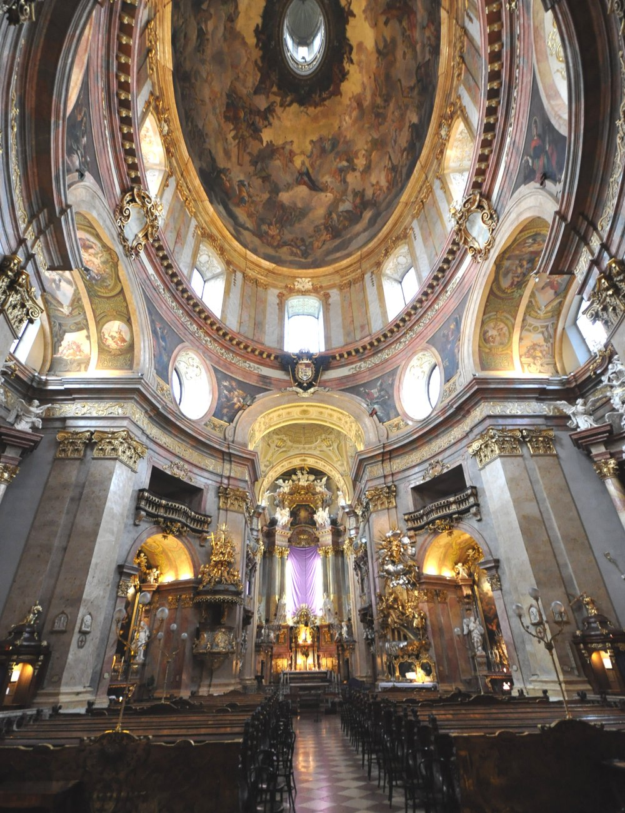

Creation ou restauration, decrivez-nous votre projet. Premier echange et devis gratuits, sur tout le bassin cannois.
Reponse sous 48h. Vos donnees ne sont jamais transmises a des tiers.
Merci, votre demande a bien ete prise en compte (demonstration). Nous vous recontactons rapidement.